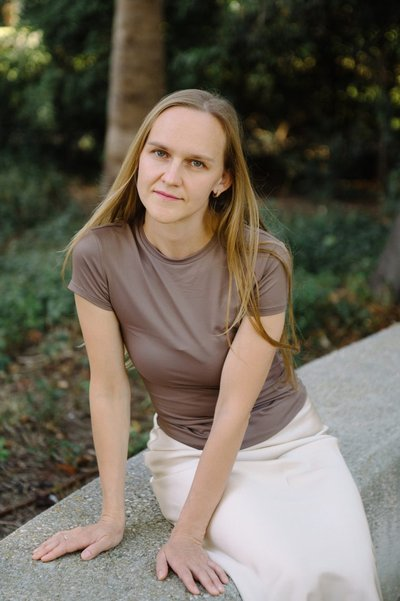

Алёна Салимова
Пятнадцать лет преподаю математику и информатику — в школе, на курсах, один на один. Сейчас работаю с детьми 1º–4º ESO в Валенсии, на русском языке.
Записаться на диагностику
По образованию — Пермский государственный национальный исследовательский университет, направление «Фундаментальная информатика и информационные технологии», квалификация — учитель информатики. Работа с данными и логикой — моя вторая профессия.
Это сочетание оказалось неожиданно полезным именно для испанской математики: в программе ESO алгебра идёт рука об руку с основами программирования (pensamiento computacional), а работа с данными и логикой — то, чем я занимаюсь каждый день и как аналитик, и как преподаватель.
Живу в Валенсии и вижу изнутри, как непросто детям, которые приходят в испанскую школу из русскоязычной среды: другой язык, другая подача материала, другие ожидания от «правильно решённой» задачи. Я перевожу испанскую программу на понятный язык — и по смыслу, и буквально.
Программа, по которой сейчас учится вся испанская школа. Полностью введена во всех классах с 2023–2024 учебного года — старая программа больше нигде не действует.
Математику в ESO строят не по отдельным темам, а вокруг шести сквозных направлений мышления — от чисел и геометрии до отношения ребёнка к предмету. При этом учебники выглядят привычно: главы всё так же называются «Числа», «Уравнения», «Геометрия».
Единого государственного учебника нет — школа сама выбирает издательство: Anaya, Santillana, SM и другие. Поэтому у детей из разных школ книги часто выглядят по-разному — и это совершенно нормально.
Единственный государственный тест по математике проходит один раз, в 2º ESO, и не влияет на оценки. На остальных переходах между классами внешнего ориентира для родителей нет — только оценки самого учителя.
Короткая проверка по всем направлениям школьной программы — понятная картина того, что ребёнок уже знает и где именно не хватает уверенности.
На русском языке, по испанской программе — с опорой на учебник конкретной школы ребёнка. В 4º ESO — оба варианта, Matemáticas A и Matemáticas B.
Если школа уже прислала результаты официального теста — помогу разобраться, что они значат на практике и что с этим делать дальше.
Онлайн или очно (Валенсия, районы Campanar и Benicalap). Длительность занятия — 60 минут, диагностика — 30 минут. Стоимость занятия — 25 €.
Расскажите немного о ребёнке — классе, школе и том, что беспокоит больше всего — и я предложу удобное время для бесплатной диагностики.